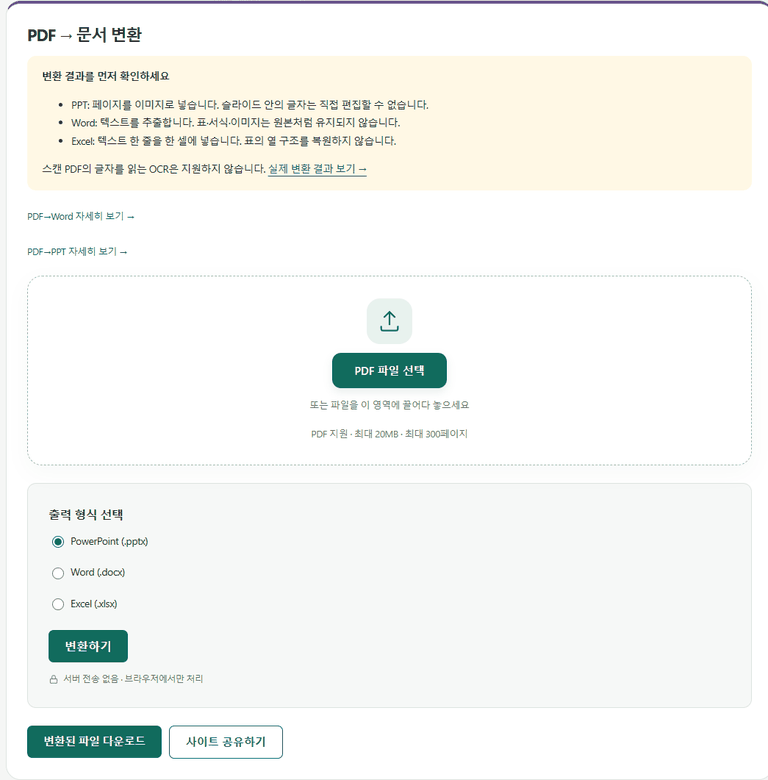

IMAGE TOOLBOX / GUIDE
PDF를 파워포인트(PPT)로 변환하는 방법
설치나 회원가입 없이, 브라우저에서 바로 .pptx로 변환할 수 있습니다.
"PPT로 바꾸면 수정할 수 있겠지"라고 생각했다면
이 도구의 PDF→PPT 변환은 각 페이지를 그림으로 찍어서 슬라이드 한 장에 한 장씩 넣습니다. 그래서 파워포인트에서 글자를 고칠 수는 없습니다. 대신 PDF 자료를 발표 순서에 끼워 넣거나, 스캔 문서처럼 글자가 없는 PDF를 슬라이드로 보여 주는 데는 잘 맞습니다. 변환 화면 위쪽에도 이 차이가 먼저 안내됩니다.

직접 변환해 본 결과
제목 띠, 글머리표 문장 4줄, 사진 한 장이 들어간 가로형 발표 자료 PDF 4페이지(2.5MB)를 변환했습니다.
| 항목 | 결과 |
|---|---|
| 슬라이드 수 | 4장(원본 페이지 수와 같음) |
| 슬라이드 내용 | 페이지 전체가 그림 1장으로 들어감 — 글상자 0개 |
| 글자 수정 | 불가(그림의 일부) |
| 처리 시간 | 약 0.8초 |
| 파일 용량 | 2.7MB(원본 PDF보다 약 7% 큼) |
페이지를 그림으로 바꾸기 때문에 PPT 파일이 원본 PDF보다 약간 커졌습니다. 글자 위주의 가벼운 PDF일수록 이 차이가 더 벌어질 수 있습니다. 슬라이드 크기는 16:9로 바뀌지 않고 원본 PDF 페이지 비율을 그대로 따릅니다.
목적별로 고르는 법
자주 묻는 질문
슬라이드 안의 텍스트를 파워포인트에서 수정할 수 있나요?
아니요. 각 페이지가 그림 한 장으로 들어가서 글상자가 없습니다. 글자를 고쳐야 한다면 PDF→Word로 글자를 뽑아 붙여 넣으세요.
스캔한 PDF(이미지로 된 PDF)도 변환되나요?
네. PPT 변환은 페이지를 그림으로 옮기기 때문에 스캔본도 변환됩니다. Word·Excel 변환과 다른 점입니다.
몇 페이지까지 변환할 수 있나요?
메모리 보호를 위해 PPT 변환은 최대 100페이지까지 지원합니다. 더 많다면 PDF를 나눠서 변환하세요.
슬라이드 비율이 16:9가 아니에요
슬라이드 크기는 원본 PDF 페이지 비율을 그대로 따릅니다. A4 세로 PDF라면 슬라이드도 A4 세로 비율이 됩니다.
PPT 파일이 원본 PDF보다 커요
페이지를 그림으로 바꿔 넣기 때문입니다. 테스트에서 2.5MB PDF가 2.7MB PPT가 됐습니다. 글자 위주의 PDF는 차이가 더 커질 수 있습니다.
다운로드한 파일은 어떤 프로그램에서 열리나요?
.pptx 형식이라 Microsoft PowerPoint, 한쇼, 구글 프레젠테이션 등에서 열 수 있습니다.